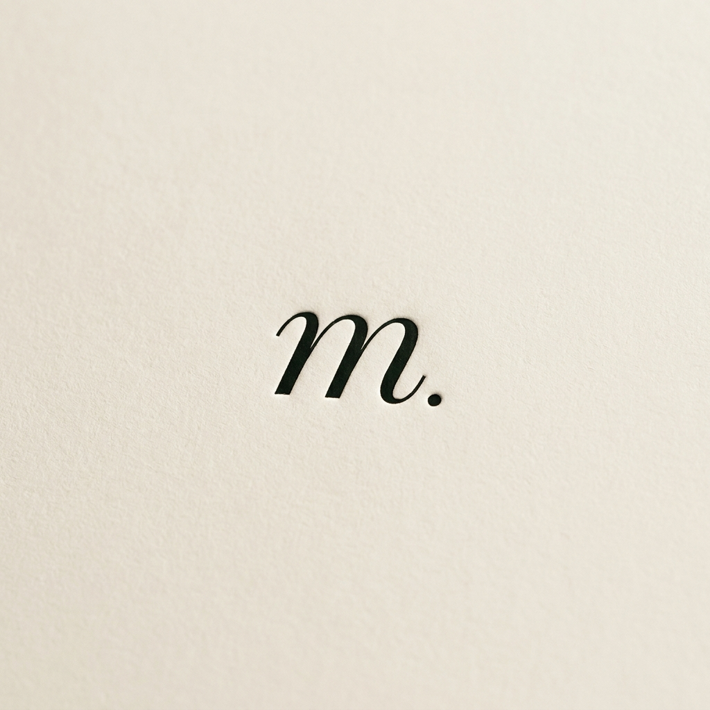
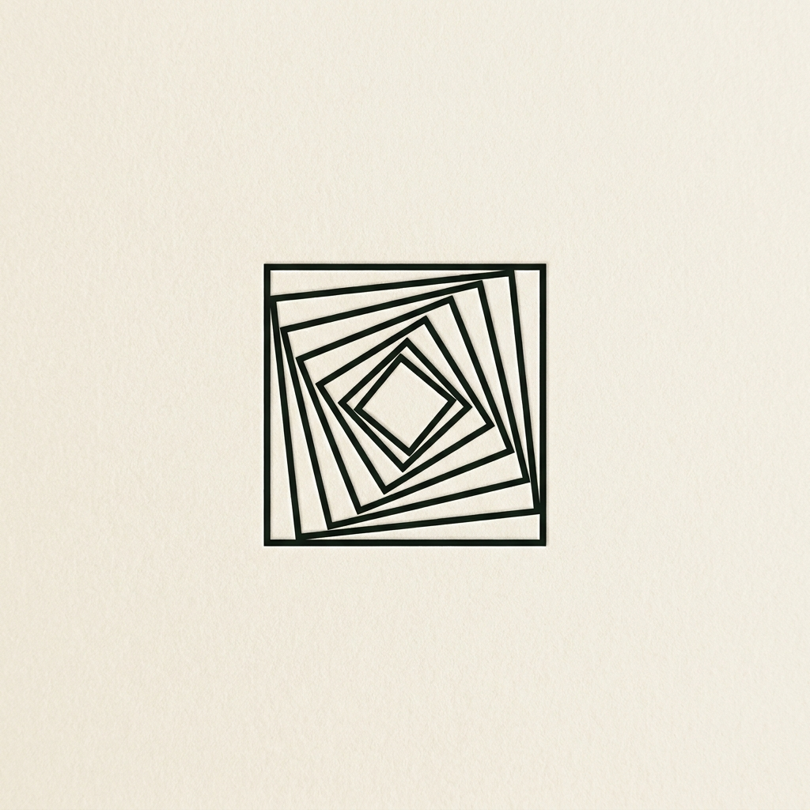
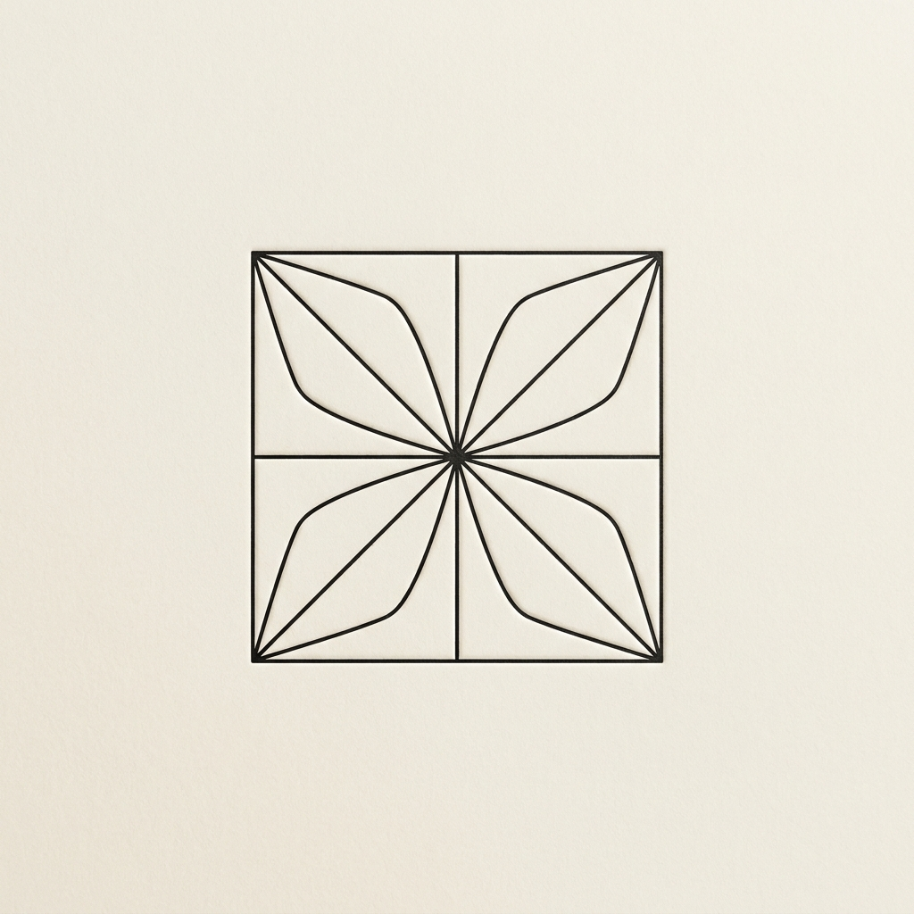
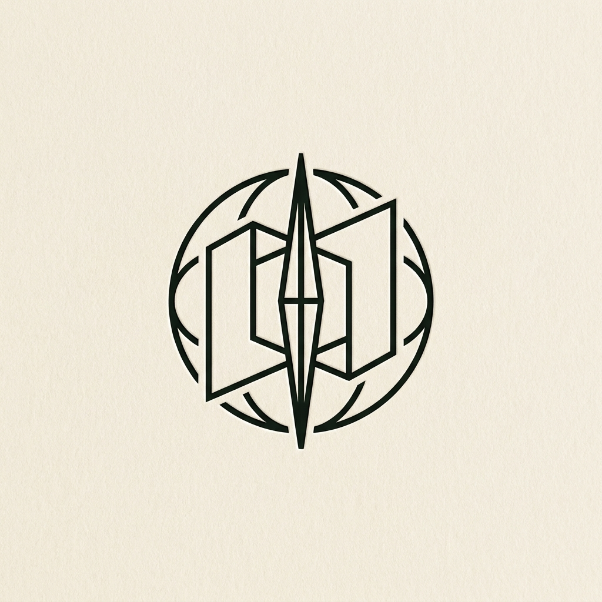

Editorial italic Didone «m» с точкой. Letterpress debossing. Hermès/Apartamento DNA.

Концентрические повёрнутые квадраты — folded book / aperture. Brand-system feel.

Геометрический звёздочка-лотос из 8 линий. Универсальный favicon, brutally clean.

Компас + раскладка + pen-tip. Прямой narrative «atlas of concepts». Самый сложный.